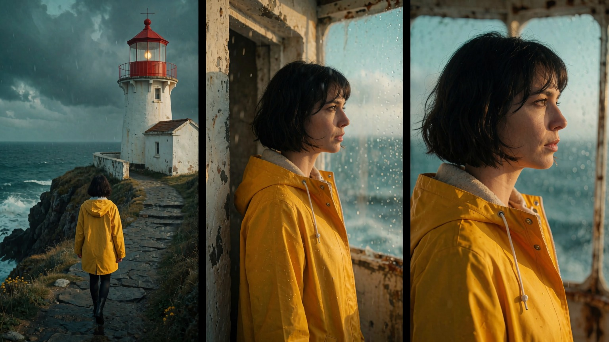

From an idea
to a visual story.
Install, configure and use zPrompt Studio for images, editing, storyboards, sequences and video.
This guide describes the bundled app. Available controls depend on the selected workflow and mode. Numbered instructions describe a procedure, not mandatory steps through all tabs.
Find your way around
Studio coordinates two engines: a local LLM/VLM writes descriptions and prompts; ComfyUI runs the workflows that generate images and video. Installing one does not install the other's model weights.
| Area | Purpose |
|---|---|
| Image Analysis | Describe a reference image or develop a text-only idea into an editable prompt. |
| Rendering | Generate or edit images, create a storyboard or sequence, and select frames for video. |
| Video Generation | Develop an idea, timeline and final prompt, then generate a video. |
| Batch Processing | Process multiple source images or prompt files. Automatic batch video generation is not included. |
| Logs & Settings | Change language, configure the LLM cache and inspect diagnostics. |
You can paste a prompt directly into Rendering or start from a prepared timeline in Video. Image Analysis is optional.
Header and progress
The header shows CPU, RAM, GPU, VRAM and ComfyUI status. “Online” means the server is reachable; it does not certify that every model is installed. The broom releases resources. The red reset button is for recovering a stuck operation. The question mark opens this guide.
Stop requests cancellation. Skip, where available, moves past the current item. Wait for the stop confirmation before starting another operation. Progress remains below the accordions when you close them. Sampling can finish before decoding or saving; wait for the final result.
Updates and personal data
Close Studio and run update.bat from a Git clone. It updates from the configured upstream branch using a fast-forward merge and installs the listed dependencies. It stops on local edits or divergent commits. It does not update ComfyUI, custom nodes or generation models.
For a ZIP installation, extract the newer version into a separate folder. Back up settings, session, custom presets, saved prompts and media. Do not overwrite your personal settings with settings.example.json. If dependency installation fails after the source update, resolve the reported error and rerun install.bat.
Install on Windows
The supplied installation scripts target Windows, Python 3.11 and an NVIDIA GPU. Studio and ComfyUI Portable use separate Python environments. Memory requirements depend on model size, quantization, image dimensions and video length.
1. Prepare the folders
Install Python 3.11, 64-bit, with the Python Launcher. Install Git for Windows if you want automatic updates. Clone the repository or extract its ZIP into a writable folder, for example D:\Studio\zPrompt_Studio. Keep all folders, including ui, languages, suggestions and workflows.
2. Run the installer
Double-click install.bat. It creates venv, installs the requirements, and creates settings only if they do not exist. Keep the terminal open to see progress and errors. It checks the environment after installing.
Manual alternative, from PowerShell in the project folder:
py -3.11 -m venv venv
.\venv\Scripts\python.exe -m pip install --upgrade pip
.\venv\Scripts\python.exe -m pip install -r requirements.txt
.\venv\Scripts\python.exe -m pip checkThe start script requires an installed environment; it is not the installer. If py -3.11 is unavailable, install Python before retrying.
3. Verify GPU support
.\venv\Scripts\python.exe -c "import torch; print(torch.__version__); print('CUDA:', torch.cuda.is_available())"CUDA must be available in Studio's environment for GPU-accelerated LLM inference. ComfyUI uses its own environment. Passing this check in Studio does not check ComfyUI. Follow the official PyTorch installation selector when resolving incompatible or CPU-only packages; avoid upgrading individual Torch packages independently.
4. Prepare ComfyUI Portable
- Install ComfyUI Portable separately and start it at least once.
- Check that its server is reachable, normally at
http://127.0.0.1:8188. - The portable root must contain
python_embededandComfyUI. - Install custom nodes and weights required by your selected workflow. Custom-node dependencies belong in ComfyUI's Python environment.
- Restart ComfyUI after installing nodes and check that model filenames are available in its loaders.
5. Configure Studio
With Studio closed, edit the relevant keys in settings.json. Do not replace the entire file with this excerpt:
{
"COMFYUI_DIR": "D:\\ComfyUI_windows_portable",
"COMFYUI_URL": "http://127.0.0.1:8188",
"STUDIO_OUTPUT_DIR": "output",
"VLM_CACHE_DIR": "D:\\AI\\huggingface\\hub",
"KEEP_MODELS_WARM": false
}COMFYUI_DIR is the portable root, not its ComfyUI subfolder. Escape backslashes in JSON or use forward slashes. Relative cache and output paths resolve from Studio's project folder.
6. Start and test
Run zPrompt_Studio.bat. Open the address printed in the terminal; the port may differ from 7860 if it is occupied. Wait for ComfyUI online. Generate one small image before testing a short, low-resolution video.
Repeat environment checks with check_installation.bat or the installation check in Logs & Settings. CONFIG means that a feature needs configuration or further checks. A successful dependency check is not a complete generation test.
LLMs, cache and downloads
| Resource | How it is installed |
|---|---|
| LLM / VLM | Loaded from Hugging Face and downloaded automatically when needed. Configure its cache in diagnostics. |
| Image / video weights | Install separately into ComfyUI's model directories. Studio does not download all workflow weights automatically. |
| LoRAs | Download compatible files separately. Configure family-specific LORA_* directories. |
| Custom nodes | Install in ComfyUI/custom_nodes. Individual nodes may have their own downloads. |
Choose the cache before downloading
- Open Logs & Settings and expand model diagnostics.
- Enter a writable directory with sufficient free space in the LLM / VLM model folder field.
- Click Save and wait for confirmation.
- Select a model and start an operation. First use may download it; subsequent loads reuse the cache.
A Hugging Face cache contains folders such as models--author--model. Select their parent folder to reuse an existing cache. An empty path uses the library default, often under the user's profile unless environment variables override it.
Changing the path does not move files or remove the old cache. A model already in memory remains usable; the new path applies on its next load. Check a complete load from the destination before removing any old cache.
A VLM must support image input for analysis and frame interpretation. A text-only model is not equivalent. Visible aliases map to repositories through config_models.json; this integration uses local Transformers, not necessarily Ollama. Restricted repositories may require account access. Four-bit loading reduces memory use but does not imply a four-bit-sized download. A cache folder alone does not prove that the download is complete.
Workflows and requirements
A workflow is a graph of nodes, not a model. Studio uses API-format JSON files and adapters that expect particular nodes and inputs. A graph that works in ComfyUI is not automatically compatible with Studio.
- Choose one supported workflow for your first test.
- Use the inventory below and the installation checker to identify required nodes and weights.
- Keep the model filenames and subfolders expected by the loaders.
- Restart ComfyUI after installing nodes and refresh diagnostics.
- Test the default workflow before changing advanced parameters.
| Loader input | Usual ComfyUI/models subfolder |
|---|---|
| unet_name | diffusion_models or unet, depending on the loader |
| clip_name | text_encoders or clip |
| vae_name | vae |
| lora_name | loras and family subfolders |
| ckpt_name | checkpoints |
| upscale_model | upscale_models, depending on the node |
Obtain weights from their original distributions and check the exact variant and license. The inventory identifies expected filenames; it is not a download-link catalog. Preserve node IDs and technical class names. Keep backups before editing workflow_params.json or replacing a workflow.
flux2_klein_api.json
Node classes
CFGGuider, CLIPLoader, CLIPTextEncode, ConditioningZeroOut, EmptySD3LatentImage, Flux2Scheduler, KSamplerSelect, RandomNoise, SamplerCustomAdvanced, SaveImage, UNETLoader, VAEDecode, VAELoader
Model filenames
Flux2\flux-2-klein-9b-fp8mixed.safetensorsQwen\qwen_3_8b_fp8mixed.safetensorsflux2-vae.safetensors
krea2_turbo_api.json
Node classes
CLIPLoader, CLIPTextEncode, ClownsharKSampler_Beta, ComfyUI-Krea2T-Enhancer, ConditioningZeroOut, EmptyLatentImage, Power Lora Loader (rgthree), SaveImage, UNETLoader, VAEDecode, VAELoader
Model filenames
Krea2\krea2_turbo_fp8_scaled.safetensorsqwen3VL4BAbliteratedComfyui_v10.safetensorsqwen_image_vae.safetensors
krea2_turbo_edit_api.json
Node classes
CLIPLoader, ConditioningZeroOut, EmptySD3LatentImage, GetImageSize, KSampler, Krea2EditGroundedEncode, Krea2EditModelPatch, LoadImage, LoraLoaderModelOnly, PreviewImage, ResizeImageMaskNode, SaveImage, UNETLoader, VAEEncode, VAELoader, VAEUtils_VAEDecodeTiled
Model filenames
Krea-2\krea2_identity_edit_v1_2.safetensorsKrea2\krea2_turbo_fp8_scaled.safetensorskrea2RealVae_v10.safetensorsqwen3vl_4b_uncensored_bf16.safetensors
ltx2.5_api.json
Node classes
CLIPLoader, CLIPTextEncode, ComfyMathExpression, CreateVideo, EmptyLTXVLatentVideo, KSamplerSelect, LTXVAudioVAEDecode, LTXVConcatAVLatent, LTXVConditioning, LTXVDualCFGGuider, LTXVEmptyLatentAudio, LTXVImgToVideoInplace, LTXVLatentUpsampler, LTXVPreprocess, LTXVSeparateAVLatent, LatentUpscaleModelLoader, LoadImage, ManualSigmas, PrimitiveBoolean, PrimitiveFloat, PrimitiveInt, RandomNoise, ResizeImageMaskNode, SamplerCustomAdvanced, SaveVideo, UnetLoaderGGUF, VAEDecodeTiled, VAELoader
Model filenames
Gemma\gemma4-12b-with-proj-ltx-2.5-comfy-int8-convrot.safetensorsLTX-2.5\LTX-2.5-Distilled-Q4_K_S.ggufLTX-2.5\ltx-2.5-latent-spatial-upscaler-x2-bf16-1.0.safetensorsltx-2.5-audio-vae-bf16.safetensorsltx-2.5-video-vae-bf16.safetensors
minimax_h3_api.json
Node classes
BasicGuider, CLIPLoader, ComfyMathExpression, LoadImage, LoraLoaderModelOnly, MiniMaxH3DualClockSamplerT8, MiniMaxH3MemoryEfficientSageAttentionPatch, MiniMaxH3ReferenceToVideo, PrimitiveFloat, RandomNoise, ResolutionSelector, SamplerCustomAdvanced, Text, UNETLoader, VAEDecode, VAEDecodeAudio, VAELoader, VHS_VideoCombine
Model filenames
MiniMax\Minimax-h3_Singularity_ref2va_v1.3_int8.safetensorsMiniMax\h3-realism-people-t2v-i2v-r2v.safetensorsMiniMax\minimax_h3_turbo_v4_step600_ema.safetensorsminimax_h3_audio_vae_fp32.safetensorsminimax_h3_video_vae_int8_convrot.safetensorsqwen3vl_32b_minimax_h3_nvfp4_awq.safetensors
qwen_image_2.1_edit_api.json
Node classes
CLIPLoader, EmptyImage, ImageCompositeMasked, ImageScaleToTotalPixels, KSampler, LoadImage, SaveImage, TextEncodeQwenImage21, UNETLoader, VAEDecode, VAELoader
Model filenames
Qwen_image_2.1\qwen_image_2.1_int8_convrot.safetensorsqwen3vl_8b_int8_convrot.safetensorsqwen_image_2.1_vae_bf16.safetensors
z_image_turbo_api.json
Node classes
CLIPLoaderGGUF, CLIPTextEncode, ConditioningZeroOut, EmptySD3LatentImage, KSampler, LatentUpscaleBy, LoraLoaderModelOnly, ModelSamplingAuraFlow, SaveImage, UNETLoader, VAEDecode, VAELoader
Model filenames
Qwen\Qwen3-4b-Z-Image-Engineer-V4-Q8_0.ggufZ-Image\z_image_turbo_bf16.safetensorsae.safetensors
Your first image
- Open Image Analysis and enable Text only.
- Set the preset to “-” and enter a short idea in Extra instructions, such as “A small red boat on a quiet lake at sunset, no people”.
- Click Generate Prompt. Check that the English output describes the requested scene.
- Open Rendering. Review the transferred prompt or paste your own.
- Select an installed image model, Classic mode and one image. Use modest dimensions supported by that workflow.
- Click Generate Image and wait for the gallery result. Save the prompt to reuse it.
A small red boat on a quiet lake at sunset, warm reflections on the water, wide cinematic composition, no people.Image Analysis
Start from a reference
- Disable Text only and upload the image on the right.
- Select a vision-language model that supports image input.
- Optionally choose a Vision preset, then review the System Prompt.
- Use Extra instructions to specify what to preserve, omit or change.
- Click Analyze, review the output and correct invented details before generating an image.
| Control | Use |
|---|---|
| Vision model | The model that reads images or writes prompts, distinct from the image generator. |
| Max tokens | Limits response length, not image resolution. Increase it if the response is truncated. |
| Vision preset | Stylistic guidance. “-” avoids an extra preset. |
| System Prompt | General instructions. Changing presets or modes may replace them; review custom changes. |
| Extra instructions | Your specific request or the starting idea in Text only mode. |
| Text only | Generate a description without interpreting the uploaded image. |
| Result | Editable text. The interface language is separate from the visual prompt language, which is requested in English. |
Rendering and prompt refinement
- Select an installed image model and Classic mode.
- Write, paste or load the prompt.
- Choose dimensions, number of copies, seed and any compatible LoRAs in advanced settings.
- Generate and inspect the result in the gallery.
Refine description combines your change request with the existing prompt. Specify replacements clearly: “replace the red coat with a blue coat; keep the setting and framing”. Review the result before rendering. The restore arrow recovers the previous field text when available; it is not a complete project history.
The gallery magnifier opens a larger view. F selects the first video frame and L selects the last frame. Confirm their thumbnails in the Video tab. Gallery refresh reloads results; clearing the gallery changes its displayed/session content. Preserve important files separately.
Edit an existing image
- In Rendering, select Image Edit mode and a supported edit workflow.
- Supply the source image through the available source control.
- Describe the desired change, together with what must stay unchanged.
- Review workflow-specific settings and generate.
- Compare the source and result, especially faces, hands, text and background geometry.
Editing is generative: it does not guarantee pixel-perfect preservation. Qwen Image 2.1 uses a one-megapixel working image in the supplied workflow. Optional LoRAs must match its model family. The default Qwen workflow uses 30 steps, CFG 1, Euler/simple and denoise 1; changing these affects the result.

Storyboards and panel cutting
- Select Storyboard mode in Rendering.
- Choose the panel layout and describe the story, cast, setting and progression.
- Generate the complete board and inspect its actual separators.
- Use Cut panels after generation has finished.
- Review every crop before selecting a panel for video.
Requested panel count and layout are instructions to a generative model, not a guaranteed grid. If boundaries are irregular, try fewer panels or a clearer layout. Higher resolution alone does not guarantee correct cuts. A panel used for video should describe its scene, not the original “three-panel storyboard” layout.

Sequences, cast and setting
Sequence mode generates related shots using recurring descriptions and shot-specific actions. It is distinct from cutting a single storyboard image.
- Select the sequence mode and define the shared idea or scene.
- Prepare the cast: give each recurring character a stable name and a concrete appearance, clothing and distinguishing features.
- Define the shared environment, lighting and visual style.
- Describe the action, pose and framing for each shot. Keep shot instructions consistent with the shared descriptions.
- Generate and review the prompts before judging continuity in the images.
Names alone do not define a person's appearance. Keep trigger words literal when a compatible LoRA requires them. Avoid conflicting descriptions across the cast catalog and individual actions. Repeated text and a fixed seed do not guarantee an identical face, body or environment across different poses. Review each output, and use reference-supported editing where appropriate.
Suggestions: examples you can customize
The vision, direction, screenplay, storyboard and sequence folders under suggestions serve different roles: visual description, video direction, written scene ideas, panel framing and sequences. Screenplay selection loads text into the subject field; review it afterward.
- Duplicate a file from the appropriate category under a new name.
- Edit the copy and save it as UTF-8 with a lowercase .txt extension.
- Restart the app and select the new name.
- Compare a simple scene with and without the preset.
For sequence catalogs, preserve the JSON structure for characters, settings/outfits and actions. Do not treat suggestions/system as a style collection: preserve brace placeholders and template output formats.
Examples can introduce specific settings or lighting; adapt anything that conflicts with your scene. Edits to tracked files can stop update.bat, so keep copies and backups. Detailed instructions are in docs/CUSTOM_PRESETS.md in the repository.
Dimensions, sampling, seeds and LoRAs
| Control | Meaning |
|---|---|
| Width / height | Requested pixel dimensions. Workflows may align them to required multiples. Larger images use more memory. |
| Number of images / copies | How many outputs to generate for the prompt. This is separate from storyboard panels or sequence shots. |
| Sampler / scheduler | Sampling method and noise schedule. Start with the workflow defaults. |
| Steps | Sampling iterations. More is not always better for Turbo models. |
| Hi-Res steps | Iterations for a separate refinement stage, where supported. |
| Denoise / refine strength | How much the relevant stage can change the image. Do not confuse image refinement with video denoise. |
| Upscale factor | Enlargement in workflows exposing this option; some manage it internally. |
| Seed: randomize / fixed | Use a new random seed or a specified integer. Keep other parameters constant for comparisons. |
| LoRA slots 1–3 | Optional model adaptations. “-” leaves a slot empty. Use the correct model family. |
| LoRA strength | Influence of the adaptation. Excessive strength can dominate the prompt or introduce artifacts. |
| Add / remove LoRA | Show or remove optional slots. These buttons do not download or delete LoRA files. |
| Identity preservation | Workflow-specific guidance where available; it is not a guarantee of exact identity. |
Rendering, Video and Batch have separate settings. An empty optional LoRA panel does not mean that the workflow has no built-in acceleration LoRAs. Advanced accordions start closed.
Video: image, idea, timeline, prompt
Start from an image (I2V)
- Select F in Rendering or upload Frame 1. Disable Text only / T2V.
- Check the first-frame thumbnail. If using a last frame, verify L too.
- Choose the video model in format settings before creating the final prompt.
- Enter movement and scene intent in Idea / Subject. Set duration.
- Optionally use Create / Improve Subject, then review the expanded text.
- Write the timeline and check clip actions, camera directions and sounds.
- Add any global atmosphere or dialogue, then create the video prompt.
- Review the prompt and generate the video. Wait until the player shows the saved result.
Start from text (T2V)
Enable Text only / T2V. Describe the subjects' appearance as well as the setting and motion. Selected images are not used as first/last frames in this mode. A name by itself is not a visual description.
Start from an existing timeline or prompt
You can skip subject generation and write the timeline manually, or load a saved final prompt. Check model, duration and mode. Recompile the prompt after changing its timeline, duration or target model.
Save, restore and extend
Save Prompt stores text for reuse. The restore arrow recovers the prior field text when available. Extend Video uses the available continuation flow: review the new starting frame, the next action and duration. It is not a free-form multitrack editor.
Visual prompts are requested in English; requested dialogue may retain its chosen language. Always review names, appearance, actions and sound instructions. A valid format does not guarantee semantic accuracy.
Timeline and audio
- Expand Timeline.
- Write a concrete action in Clip details, compatible with the clip length.
- Enter local sounds in Clip audio.
- Select framing and camera motion, then add the clip.
- Select an existing clip to edit it; apply with Update or leave editing with Cancel.
- Remove last deletes the last clip. Clear timeline clears the current sequence.
- Check the total duration and rebuild the final prompt.
| Choice | Meaning |
|---|---|
| Framing | Wide, medium, close-up, macro, high/low angle, POV and other supported views. |
| Camera movement | Static, pan, tilt, dolly, tracking, zoom or handheld. A static camera does not require a static subject. |
| Clip audio | Local sounds attached to an action. |
| Global audio atmosphere | Sound directions shared across the scene, alongside clip-specific sounds. |
| Generate dialogue | Propose speech. Specify speaker and language; keep its length compatible with the available time. |
| Genre / style | Narrative guidance for the subject and timeline. |
| Director style | Direction for the final prompt, not a request to replace the cast or actions. |
[0.0s - 5.0s] Wide Shot | Static (No Zoom) | A small red boat glides across the lake at sunset | Water ripples and wind noiseAdapt this example to your actual duration. If prompt timings and video duration do not match, align the settings or recreate the prompt; increasing a timeout does not fix the mismatch.
LTX2.5 and MiniMax H3
| Parameter | Use |
|---|---|
| Video model | Selects the workflow, not the director LLM. Choose it before compiling the final prompt. |
| FPS | Temporal sampling and playback rate. MiniMax uses 24 fps in this integration; LTX exposes other choices. |
| Aspect ratio / resolution | Match the intended composition. Workflows align dimensions and frame counts to their own constraints. |
| Number of videos | Variants of this request, not automatic batch video processing from a folder. |
| CFG / strength | Workflow-specific guidance and conditioning. Start with the defaults. |
| Compression | Applies where exposed by the workflow; not JPEG image quality. |
| Steps / scheduler / denoise | Available controls depend on the selected model. MiniMax's adapter requires denoise 1. |
| MiniMax sampling profile | Current, V4 - 6 steps or V4 - 8 steps. It changes sampling settings, not the included Turbo LoRA. |
| Video seed / LoRAs | Separate from image settings. Use compatible video-family files. |
First and last frames
LTX uses conditioning guides in the passes defined by its workflow. The recognized MiniMax Singularity v1.3 int8 checkpoint and FL2VA checkpoints follow the first/last-frame path; other Ref2VA variants retain visual references. Read the app's current model note rather than assuming that every MiniMax checkpoint has identical capabilities.
Prompt format
MiniMax uses subject_definitions, summary, retention_analysis, detailed_description, overall_soundscape and non_diegetic_music. LTX receives a description adapted to its own flow. Let Create Video Prompt perform this conversion.
Frame-count alignment can slightly change actual output duration. In a four-second local test, LTX produced 97 frames at 24 fps (4.04 seconds); MiniMax produced 107 frames (4.46 seconds) because the supplied workflow rounds to its valid frame grid. This is not a benchmark or a guarantee for every mode and resolution.
Batch processing
From images (Vision)
- Choose Images (Vision) and upload the source images.
- Select an image generator and a vision model.
- Set a common preset, System Prompt and Extra instructions.
- Configure the batch dimensions, copies, sampling and LoRAs.
- Start Batch. Prompt preparation precedes rendering.
- Inspect the current generated prompt and gallery. Use Skip for the current item or Stop for the batch.
From text files
- Select Text Files (Prompts).
- Upload .txt files, preferably UTF-8, containing the prompts.
- Review the shared image-model settings and start.
The text-file path reads the file content and does not need image analysis. Do not assume that Vision automatically retrieves embedded PNG prompts: the documented flow analyzes the image. Refresh reloads the gallery; clearing it affects the displayed/session content. Keep source files and important results backed up. Automatic batch video generation is not implemented.
Logs, settings and files
Refresh Log reads current messages. Clear Log clears the displayed application log. IT/EN changes interface labels, not previously entered user text. Diagnostics list workflow requirements and detected LLM repositories; a present cache folder can still be incomplete.
| File / folder | Purpose |
|---|---|
| settings.json | Backend paths, preferences and timeouts. Edit with the app closed, except settings explicitly managed by the UI. |
| session.json | Persistent values and file references. It is not a self-contained media archive. |
| config_models.json | LLM/VLM repositories and aliases. |
| workflow_params.json | Advanced internal workflow parameters. Keep a known-good copy. |
| workflows/ | API graphs expected by the adapters. |
| suggestions/ | Vision, direction, screenplay, storyboard, sequence and system presets. |
| saved_prompt/images and videos | Saved prompts; include custom presets in backups too. |
| output/ and ComfyUI/output | Generated media, depending on the flow. Check STUDIO_OUTPUT_DIR. |
COMFYUI_ARGS adds server arguments. COMFYUI_HIGHVRAM affects memory management. KEEP_MODELS_WARM keeps models ready at a memory cost. LORA_* specifies family-specific directories.
IMAGE_TIMEOUT, TEXT_TIMEOUT, STREAMING_TIMEOUT, COMFYUI_IMAGE_TIMEOUT, COMFYUI_VIDEO_TIMEOUT and COMFYUI_STARTUP_TIMEOUT configure time limits; they are not a guaranteed hard stop of GPU computation across every backend. Before updating, back up settings, sessions, prompts, custom catalog/presets and media.
Troubleshooting
| Symptom | What to check |
|---|---|
| Start script does not launch | Check venv/Scripts/python.exe, the working directory and requirements. Read the first terminal exception. |
| ComfyUI offline | Check COMFYUI_DIR, URL and server startup. Studio's port and ComfyUI's port are different. |
| Missing node or model | Check exact class/filename and install in ComfyUI's environment, then restart. |
| LLM downloaded under .cache | Set and save the LLM cache path before loading. Check the effective path in diagnostics. |
| Slow or interrupted download | Check connectivity, space and repository access. Retry with the same cache; do not move partial files during download. |
| CUDA out of memory | Reduce dimensions, duration or copies. Release resources and avoid other GPU loads. Use a smaller compatible model. |
| Visual prompt in the wrong language | Review model behavior, presets and request. Dialogue can intentionally remain in its requested language. |
| Idea or prompt changed unexpectedly | Use the restore arrow when available and save important text before regenerating. |
| Timeline / duration mismatch | Check clip totals and recompile after changing model, mode or duration. |
| Wrong first frame | Check F and the Video thumbnail; disable T2V to use image conditioning. |
| Bad storyboard cuts | Inspect the generated grid. Try fewer panels and clearer boundaries. |
| LoRA missing from list | Check the model family's LORA_* folder, filename and compatibility. Refresh/restart if needed. |
| 100% but no output yet | Decoding, transfer or saving may remain. Check final status and logs before restarting. |
When reporting a problem, include tab, mode, model, workflow, dimensions, duration, reproduction steps and the complete error. Use a minimal non-personal example. Do not publish tokens, credentials or an entire model cache.
Control reference
Use these links to find the controls by task. Some controls are initially hidden and only apply to particular workflows. Dynamic personal file and LoRA lists are not included. Refer to the task sections above for procedures.
- Vision model, tokens, presets and analysis
- Generation, refinement and gallery
- Edit source and instructions
- Panel layout and cutting
- Cast, setting and actions
- Dimensions, copies, seed, sampling and LoRAs
- Idea, first/last frame and final prompt
- Clips, camera and audio
- Video model, FPS and generation settings
- Batch input modes
- Language, cache, logs and files
Sources and maintenance
App procedures are based on the bundled ui, events, generators, services and core modules. The workflow inventory is generated from the seven API graphs. Examples are actual workflow outputs, not stock photographs. They do not certify every model, face, movement or hardware combination.
- Python for Windows
- ComfyUI downloads
- Installing custom nodes
- PyTorch installation selector
- Hugging Face cache structure
See docs/EXAMPLES.md for the showcase prompts and THIRD_PARTY_NOTICES.md for retained references. Review this manual when workflows or controls change.